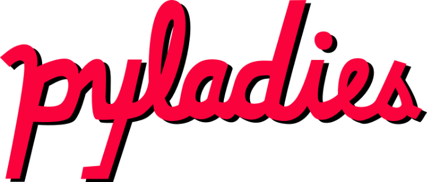
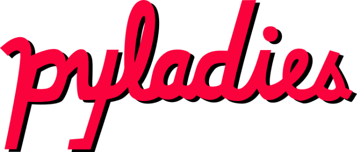

W tej chwili najnowszą wersją Pythona jest 3.6.1, zalecamy taką zainstalować.
Tym razem napiszemy wspólnie grę wykorzystując moduł pygame . Na stronie https://www.pygame.org/wiki/GettingStarted znajduje się instrukcja instalacji.
Wystarczy w linii poleceń (cmd) wydać komendę:
Jeśli mamy zainstalowaną wyłącznie wersję trzecią Pythona, to zamiast python3 mamy python. Wtedy
Uwaga. Zastosowany powyżej moduł pip (package manager) dostępny jest od Pythona 3.4.
By sprawdzić czy się udało wykonujemy w linii poleceń
Tym razem napiszemy wspólnie grę wykorzystując moduł pygame . Na stronie https://www.pygame.org/wiki/GettingStarted znajduje się instrukcja instalacji.
Wystarczy w linii poleceń (cmd) wydać komendę:
python3 -m pip install pygame --user Jeśli mamy zainstalowaną wyłącznie wersję trzecią Pythona, to zamiast python3 mamy python. Wtedy
python -m pip install pygame --user Uwaga. Zastosowany powyżej moduł pip (package manager) dostępny jest od Pythona 3.4.
By sprawdzić czy się udało wykonujemy w linii poleceń
python3 -m pygame.examples.aliens
Skorzystamy z następującego zestawu grafik: pydrop-data.zip.
Można przygotować własne obrazki.
Najlepiej o takich samych wymiarach i nazwach.
Pod adresem pydrop znajduje się przykładowy kod, który wspólnie napiszemy.
Część 1
- Programowanie obiektowe
- Klasa, obiekt, pole, metoda, self
- Specjalne metody
- Dziedziczenie
- Wyjątki
Programowanie obiektowe
- Programy wyrażony jest za pomocą obiektów
- Obiekt - element łączący stan i zachowanie
- Stan - pola, "membery"
- Zachowanie - metody
- OOP - object oriented programming
Inne paradygmaty programowania
- Programowanie proceduralne
- Programowanie strukturalne
Klasa, obiekt, metoda, pole, self
class NaszaKlasa:
name = 'Piotr'
def hello(self):
print('Cześć! Jestem', self.name)
def metoda(self, arg):
print('Metoda z argumentem', arg)
obiekt = NaszaKlasa()
obiekt.hello()
obiekt.metoda(16) # NaszaKlasa.metoda(obiekt, 16)
Specjalne metody
- Podwójne podkreślniki z przodu i z tyłu nazwy
- dunder - double underscore
class NazwaKlasy:
def __metoda_specjalna__(self):
pass>>> help(int)
>>> help(str) Metoda __add__ w klasie int
>>> int.__add__(4, 5) # OK
>>> 4.__add__(5) # BŁĄD
>>> (4).__add__(5) # OKKonstruktor i destruktor
class NaszaKlasa:
def __init__(self):
print('Konstruktor')
def __del__(self):
print('Destruktor')
a = NaszaKlasa()
del aWłasna klasa int
class MyInt:
value = 0
def __init__(self, value):
self.value = value
a = MyInt(5)
print(a)__str__ - operator konwersji na string
class MyInt:
value = 0
def __init__(self, value):
self.value = value
def __str__(self):
return '{}'.format(self.value)
a = MyInt(5)
print(a)Czego brakuje?
class MyInt:
value = 0
def __init__(self, value):
self.value = value
def __str__(self):
return '{}'.format(self.value)
a = MyInt(5)
b = MyInt(42)
print(a + b)__add__ - operator dodawania
class MyInt:
value = 0
def __init__(self, value):
self.value = value
def __add__(self, other):
value = self.value + other.value
return MyInt(value)
def __str__(self):
return '{}'.format(self.value)
a = MyInt(5)
b = MyInt(42)
print(a + b)Dziedziczenie
class Bazowa:
pass
class Pochodna(Bazowa):
pass
print(Bazowa.__base__)
print(Pochodna.__base__)Dziedziczenie - object
Wszystkie klasy dziedziczą po typie objectclass Pierwsza:
pass
class Druga(object):
pass
print(Pierwsza.__base__)
print(Druga.__base__)Dziedziczenie - przykład
class Bazowa(object):
x = 5
class Pochodna(Bazowa):
def hello(self):
print('Hello', self.x)
test = Pochodna()
test.hello()
Wyjątki
fruits = dict()
fruits['orange'] = 54
fruits['apple'] = 28
print(fruits['kiwi'])
Traceback (most recent call last):
File "", line X, in
KeyError: 'kiwi'
Łapanie wyjątku - try
fruits = dict()
fruits['orange'] = 54
fruits['apple'] = 28
try:
print(fruits['kiwi'])
except:
print('Złapałem wyjątek! Ale jaki?')
Złapałem wyjątek! Ale Jaki?Nazwa wyjątku
fruits = dict()
fruits['orange'] = 54
fruits['apple'] = 28
print(fruits['kiwi'])
Traceback (most recent call last):
File "", line X, in
KeyError: 'kiwi'
Łapanie konkretnego wyjątku
fruits = dict()
fruits['orange'] = 54
fruits['apple'] = 28
try:
print(fruits['kiwi'])
except KeyError:
print('Złapałem wyjątek KeyError!')
except:
print('Złapałem jakiś wyjątek!')
Złapałem wyjątek KeyError!Szczegóły wyjątku
fruits = dict()
fruits['orange'] = 54
fruits['apple'] = 28
try:
print(fruits['kiwi'])
except KeyError as err:
print('Brak klucza', err)
except:
print('Złapałem jakiś wyjątek!')
Brak klucza 'kiwi'Rzucanie wyjątku
import sys
def dodaj(a, b):
if a > 100 or b > 100:
raise Exception('Nie chce mi się liczyć!')
else:
return a + b
try:
dodaj(47, 200)
except Exception:
print(sys.exc_info())Rzucanie własnego wyjątku
import sys
class TooMuch(Exception):
pass
def dodaj(a, b):
if a > 100 or b > 100:
raise TooMuch('Nie chce mi się liczyć!')
else:
return a + b
try:
dodaj(47, 200)
except TooMuch:
print(sys.exc_info())Własny wyjątek
class TooMuch(Exception):
x = None
y = None
def __init__(self, x, y):
self.x = x
self.y = y
def __str__(self):
return 'Za dużo podałeś! Aż {} i {}'.format(self.x, self.y)Rzucenie własnego wyjątku
def dodaj(a, b):
if a > 100 or b > 100:
raise TooMuch(a, b)
else:
return a + b
try:
dodaj(47, 200)
except TooMuch as err:
print(err)Za dużo podałeś! Aż 47 i 200Część 2
- Biblioteka pygame
- Konstrukcja gry
pygame
- Dokumentacja: www.pygame.org/docs/
>>> import pygame
>>> help(pygame)
>>> help(pygame.Surface)
>>> help(pygame.Surface.blit)Początek i koniec
import pygame
pygame.init()
pygame.quit()Początek, środek i koniec
import pygame
pygame.init()
screen = pygame.display.set_mode((300, 300))
pygame.display.flip()
pygame.quit()Początek, ciekawszy środek i koniec
import pygame
pygame.init()
screen = pygame.display.set_mode((300, 300))
screen.fill((255, 0, 0))
pygame.display.flip()
pygame.time.wait(1000)
screen.fill((255, 0, 0))
pygame.display.flip()
pygame.time.wait(1000)
pygame.quit()Początek, żółty środek i koniec
import pygame
pygame.init()
screen = pygame.display.set_mode((300, 300))
eggyolk = pygame.Surface((100, 100))
eggyolk.fill((230, 230, 0))
screen.fill((230, 230, 230))
screen.blit(eggyolk, (100, 100))
pygame.display.flip()
pygame.time.wait(1000)
pygame.quit()Konstrukcja prostej gry
1. Utwórz i zainicjuj główne obiekty
2. Wczytaj zasoby (obrazki, dźwięki)
3. Główna pętla:
4. Interpretacja zdarzeń (klawisze, zmiana rozmiaru okna)
5. Aktualizacja obiektów
- pozycje
- punkty
- czy przerwać grę? TAK → przejdź do punktu 9.
6. Czyszczenie ekranu i rysowanie obiektów (blit)
7. Flip (renderowanie)
8. Przejdź do punktu 3.
9. Posprzątaj po sobie.Konstrukcja prostej gry (przykład)
import pygame
pygame.init()
screen = pygame.display.set_mode((300, 300))
background = pygame.image.load('tekstura.png')
mainloop = True
while mainloop:
events_loop()
update_objects()
if quit:
mainloop = False
screen.blit(background, (0,0))
pygame.display.flip()
pygame.time.wait(16)
pygame.quit()Część 3
- Analiza gry Alien Drop
Część 4 - tworzymy grę
- Folder z plikami
- Określenie wymiarów
- Elementy
- Sterowanie
- Kod
Folder z plikami
└── pydrop
├── data
│ ├── background.png
│ ├── moon.png
│ ├── ninja.png
│ ├── nokiafc22.ttf
│ ├── pyladies_head.png
│ └── python_logo.png
└── pydrop.py
title
prepare
part1-oop
oop-def
oop-class
oop-dunder
oop-dunder-int
oop-ctor-dtor
oop-myint-1
oop-myint-2
oop-myint-3
oop-myint-4
oop-inheritance-1
oop-inheritance-2
oop-inheritance-3
except
except-try
except-keyerror-1
except-keyerror-2
except-keyerror-3
except-throw
except-myexcept
except-myexcept-example
except-myexcept-example-cd
part2-pygame
pygame-1
pygame-2
pygame-3
pygame-4
pygame-5
mygame-base
mygame-base-2
part3-aliendrop
part4-pydrop
folder